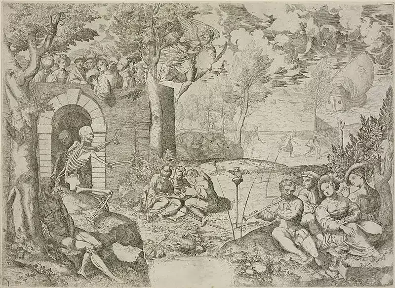

First published on Jan 1, 2022

I am skeptical of New Year's Resolutions. I am unsure if that is because I have always struggled to meaningfully stick to any goals or because there is an inherent issue with the concept.
A year is a long time and most resolutions are thought of quickly and haphazardly sometime between Christmas and New Year. The goal setting is rushed and the actual goals themselves lack a reasonably executable timeframe.
What is the solution? I don’t know, though I do have a plan. Tim Ferriss has an interesting idea: he has replaced goal setting for a past year review. Once you have been through a structured analysis of the previous year you are able to work out what to actively seek out and actively avoid for the next year based on the positive and negatives of the previous year.
Using this as the starting point, I am going to briefly consider the previous year in various capacities and then use that information to aid the goal setting. The goal setting itself is going to be as structured as I can possibly make it; it’s not quite the SMART formula but I will be breaking down the themes into far more manageable chunks.
There will be some top level macro goals/themes. These are less specific concepts that I will resolve to improve or aim towards. I will subsequently start with several more specific goals that loosely are aimed to be completed within a month. Some will take days, some months, some will fail. At the end of each month I will review the progress and adjust accordingly. Perhaps the themes will change as new shit comes to light.
My hope is that this slightly more nuanced approach of review and amendment to the resolution process, along with the analysis of the previous year, will bring more successful and fulfilling results than previous attempts.
What happened? A lot. I went from a junior engineer to a mid level engineer to leading a team. One of my goals for the year was to be relentless with learning, with progressing my career and to stay on the exponential growth curve. The start of the year was huge in both effort and output. It feels like I hit a cheat code and skipped several years of work with a short extremely high intensity burst of focus.
It will be no surprise to many that what happened next was entirely predictable: I didn’t stop. From August I kept up the intensity but did not adjust the target. My wheels were spinning in the mud, the engine revving but nothing more was being achieved.
I excelled at the tasks at hand but I wasn’t striving for anything. I was simply working at an unnecessarily frenetic pace. I slowly began to feel tired; physically and mentally. My diet slipped, exercise became non-existent and the familiar snowballing of mental and physical decline began.
The last few months have been rough. My fighting weight is about 77kg, which I was throughout the first half of the year - I currently weigh about 89kg. I feel sluggish, tired and lacking energy. I am extremely aware that my mental health follows close behind the physical and there has been a lot of collateral damage along the way: romantic and platonic relationships, work productivity and general lust for life.
The new year will start with a focus on physical and mental health, a focus on my career and new goals and challenges and a focus on learning and progressing my knowledge in many areas as well as others.
Following are the overarching themes for 2022. Each month will feature more specific goals, mostly relating to the themes below. At the end of the month I will assess and evaluate the progress as well as set new goals or roll previously incomplete goals into the next month.
So there we have it. These are the themes I am keeping it mind as the year slowly trundles forward and far more specific and obviously actionable goals will be generated for each month - the lists of which can be found below.
I wish you all a fantastic 2022 - let’s make it the best year yet.